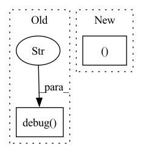

Pattern ID :37747
Before Change
log.debug("Received df with many time series")
received_single_time_series = False
else:
log.debug("Received df with single time series" )
else:
new_df["ID"] = "__df__"
log.debug("Received df with single time series")
elif df is None:After Change
single_or_multiple_message = "a single" if df_has_single_time_series else "multiple"
log.debug(f"Provided DataFrame (df) has an ID column and contains {single_or_multiple_message} time series.")
return df_copy, df_has_id_column, df_has_single_time_series, unique_id_values
def return_df_in_original_format(df, received_ID_col=False, received_single_time_series=True):
Return dataframe in the original format.In pattern: SUPERPATTERN
Frequency: 5
Non-data size: 2
Instances Fragment ID: 108381589
Project Name: ourownstory/neural_prophet
Commit Name: ddcb2d23c702ca2583d530c67b4ba2fe673cedd0
Time: 2023-03-01
Author: noxan@users.noreply.github.com
File Name: neuralprophet/df_utils.py
M Class Name: AnonimousClass
N Class Name: AnonimousClass
M Method Name: prep_or_copy_df(1)
N Method Name: prep_or_copy_df(1)
M Parent Class:
N Parent Class:
M File Name: neuralprophet/df_utils.py
N File Name: neuralprophet/df_utils.py
M Start Line: 25
M End Line: 63
N Start Line: 25
N End Line: 64
Before Change
ssh_keyfile=self.args.ssh_keyfile,
ssh_password=self.args.ssh_password,
)
self.logger.debug(
f"output {self.args.host_out}:{colored(self.args.port_out, "yellow")}"
)
else:
out_sock, out_addr = None, None
self.logger.debug(After Change
f"control over {colored(ctrl_addr, "yellow")} ({SocketType.PAIR_BIND.name})"
)
return ctx, in_sock, out_sock, ctrl_sock, in_connect
except zmq.error.ZMQError as ex:
self.close()
raise ex
Fragment ID: 108381584
Project Name: jina-ai/jina
Commit Name: 50f09f4b5e6f0fce5a116289a6827f0cbf694396
Time: 2021-06-29
Author: maximilian.werk@gmx.de
File Name: jina/peapods/zmq/__init__.py
M Class Name: Zmqlet
N Class Name: Zmqlet
M Method Name: _init_sockets(1)
N Method Name: _init_sockets(1)
M Parent Class:
N Parent Class:
M File Name: jina/peapods/zmq/__init__.py
N File Name: jina/peapods/zmq/__init__.py
M Start Line: 149
M End Line: 204
N Start Line: 162
N End Line: 236
Before Change
self._tritonserver_process = Popen(
cmd, start_new_session=True, stdout=PIPE, stderr=STDOUT, universal_newlines=True
)
LOGGER.debug("Triton Server started." )
def stop(self):
Stops the running tritonserverAfter Change
else:
env = self._get_env()
tritonserver_cmd, *rest = self._server_path.split(" ", 1)
tritonserver_cmd = sh.Command(tritonserver_cmd)
tritonserver_cmd = tritonserver_cmd.bake(*rest)
Fragment ID: 108381587
Project Name: triton-inference-server/model_navigator
Commit Name: 9a563571c3adac5531af25d249431aa3fd543b9b
Time: 2021-09-29
Author: pziecina@nvidia.com
File Name: model_navigator/triton/server/server_local.py
M Class Name: TritonServerLocal
N Class Name: TritonServerLocal
M Method Name: start(1)
N Method Name: start(1)
M Parent Class: TritonServer
N Parent Class: TritonServer
M File Name: model_navigator/triton/server/server_local.py
N File Name: model_navigator/triton/server/server_local.py
M Start Line: 52
M End Line: 60
N Start Line: 52
N End Line: 68
Before Change
elif event_proto.type == event_proto.OUTPUT:
self._outputs[artifact_name] = artifact
logger.debug(
"Fetched %d inputs and %d outputs for step "%s"." ,
len(self._inputs),
len(self._outputs),
self._name,
)
def __repr__(self) -> str:
Returns a string representation of this step.
return (After Change
// we already fetched inputs/outputs, no need to do anything
return
self._inputs, self._outputs = self._metadata_store.get_step_artifacts(
self
)
Fragment ID: 108381586
Project Name: maiot-io/zenml
Commit Name: 36e0e49cee8cf9ba619ec9311be53eeafcab7a20
Time: 2021-10-15
Author: michael.schuster.ffb@googlemail.com
File Name: src/zenml/post_execution/step.py
M Class Name: StepView
N Class Name: StepView
M Method Name: _ensure_inputs_outputs_fetched(1)
N Method Name: _ensure_inputs_outputs_fetched(1)
M Parent Class:
N Parent Class:
M File Name: src/zenml/post_execution/step.py
N File Name: src/zenml/post_execution/step.py
M Start Line: 162
M End Line: 199
N Start Line: 163
N End Line: 165
Before Change
{default_config["parameters"]:
self.model.bounds[default_config["parameters"]]}
logger.debug(f"Adding {rc.__name__} with config {default_config}" )
r = rc(prior_bounds=prior_bounds, **default_config)
self._reparameterisation.add_reparameterisations(r)
self.add_default_reparameterisations()After Change
if n not in self._reparameterisation.parameters]
if other_params:
logger.debug("Getting fallback reparameterisation")
FallbackClass, fallback_kwargs = \
self.get_reparameterisation(self.fallback_reparameterisation)
fallback_kwargs["prior_bounds"] = \
{p: self.model.bounds[p] for p in other_params} Fragment ID: 108381581
Project Name: mj-will/nessai
Commit Name: 9ce0fc34d58fb4da7e1528cee6eca1c257f0af74
Time: 2021-11-30
Author: michaeljw1@googlemail.com
File Name: nessai/proposal/flowproposal.py
M Class Name: FlowProposal
N Class Name: FlowProposal
M Method Name: configure_reparameterisations(2)
N Method Name: configure_reparameterisations(2)
M Parent Class: RejectionProposal
N Parent Class: RejectionProposal
M File Name: nessai/proposal/flowproposal.py
N File Name: nessai/proposal/flowproposal.py
M Start Line: 670
M End Line: 693
N Start Line: 676
N End Line: 708